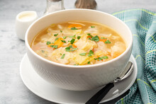

Vietnamese Cabbage Soup

This Vietnamese style cabbage soup is a light and refreshing soup for any season. Great on its own or even as a side dish, it is sure to satisfy.
Ingredients
Steps
Cut the cabbage into any shape you like, whether it be stripes or squares as long as its bite size.
After prepping the cabbage, ina large pot add your ground pork and season with salt, pepper, fish sauce, and mushroom powder.
Bring the pot to medium-high heat and mix up and break up the ground pork as it browns. When cooked through add your chopped cabbage to the pot.
Fill the pot with water till everything is submerged(the cabbage might float, that's okay just leave some clearance at the top of the pot.)
Season the soup with same seasonings as the pork, salt, pepper, fish sauce, and mushroom powder to taste. Bring the soup to a boil then cover with a lid and reduce the heat to a simmer.
After half an hour or until the cabbage is soft, the soup is ready to be served! Optionally can be enjoyed with steamed jasmine white rice.